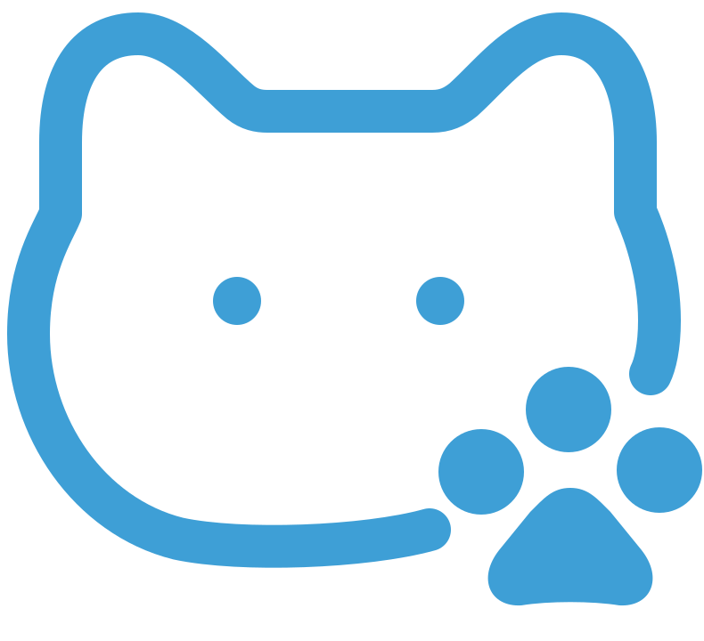
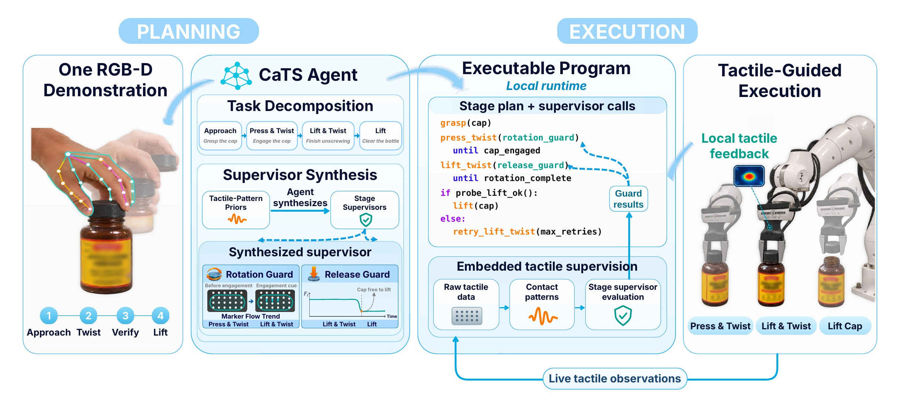
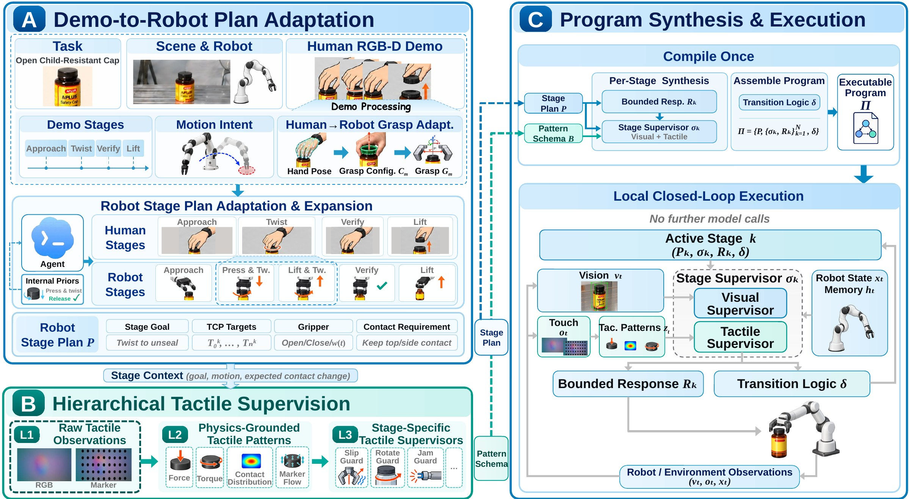

CaTS: Code as Tactile Supervisor
Grounding Robot Agents with Demonstration Priors and Tactile Supervision
1The University of Hong Kong2ViTai Robotics
Abstract
Agentic robot systems can synthesize executable Code-as-Policy programs and revise them from feedback. Their success in simulation depends on accurate state information and inexpensive retries. However, these agents fail in real-world contact-rich manipulation because these advantages are difficult to guarantee. Critical physical states are difficult to observe, and physical trial and error is costly. To address these challenges, we present Code as Tactile Supervisor (CaTS), an agentic framework that grounds robot agents with demonstration priors and tactile supervision. At planning time, CaTS analyzes a single human RGB-D demonstration to recover manipulation stages, motion intent, and key contact relations. Using physics-grounded tactile patterns as priors, the agent synthesizes stage-specific supervisors conditioned on this demonstration-derived task context. CaTS then compiles the robot stage plan and synthesized supervisors into a locally executable program. At execution time, raw tactile observations are encoded into contact patterns, which are evaluated by the synthesized supervisors to monitor contact conditions, drive bounded adjustments, and trigger stage transitions. The program runs locally without further foundation-model calls. Across six real-robot and twenty simulated tasks, CaTS outperforms all evaluated baselines in average success rate. Further evaluations demonstrate cross-sensor transfer and efficient local execution.
Contributions
- CaTS, an agentic framework that grounds robot agents by combining demonstration priors with tactile supervision: one human demonstration supplies the task context that turns tactile signals into stage-specific checks.
- Hierarchical tactile supervision — raw observations, physics-grounded patterns, and stage supervisors — that lets one supervision program run unchanged across heterogeneous tactile sensors.
- The best overall performance across six real-robot and twenty simulated tasks, while substantially reducing cumulative tactile feedback latency through local execution.
Method
The demonstration says what to do. Touch says whether it worked. Code runs both locally. CaTS turns a single human RGB-D demonstration into a robot stage plan, has an agent synthesize a tactile supervisor for every stage, and compiles everything into one program that closes the feedback loop on the robot without calling a foundation model.
Overview explorer
The walkthrough starts on its own; click a step, a sub-part, or any region of the figure to zoom in.

Pipeline explorer
The full pipeline from the paper. Pick a part (A, B or C), then a component, to zoom in.

A · Demo-to-robot plan adaptation
CaTS processes the demonstration's object and hand streams in parallel: the object branch segments targets (SAM3) and estimates 6-DoF poses (F2G-Pose); the hand branch propagates hand masks (SAM 2.1), estimates 2D keypoints (RTMPose) and lifts them to 3D joints with local depth. Changes in hand–object relative motion and contact divide the demonstration into ordered stages, each with a subgoal, a motion intent and the contacts to establish, maintain or release.
For stages where the grasp is established, CaTS extracts the human contact location, closing axis and approach direction, and keeps only the GraspGen-X robot grasps consistent with them. The agent then adapts the plan to the object (pose), the scene (trajectory) and the robot (task structure) — for example splitting a demonstrated Twist into Press & Twist and Lift & Twist to satisfy child-resistant cap mechanics.
B · Hierarchical tactile supervision
Tactile supervision is organized in three layers. L1 holds raw tactile images and marker coordinates. L2 holds physics-grounded patterns with a fixed physical meaning — the agent reads their definitions while planning, and a unified encoder fills in their values at run time. L3 holds the stage-specific supervisors the agent composes from L2 patterns.
| Category | Pattern | Runtime value |
|---|---|---|
| Contact load | Normal · Shear · Torque | scalar · 2-vector · 3-vector |
| Contact geometry | Area · Center · Axis · Elongation | per-frame contact shape |
| Marker motion | Global flow · Residual shear | mean marker displacement · per-marker residuals |
Representative pattern types (paper Table 1). For Press & Twist, the agent selects net tangential force and global marker flow, aligns them to the world frame, and composes them into a single cap-engagement cue — the Rotation Guard.
C · Program synthesis and local closed-loop execution
For every stage the agent builds a finite set of bounded responses, synthesizes the supervisor, connects the stages with transition logic and compiles the program. At each control step the encoder turns raw touch into pattern values, the active supervisor selects a bounded response, and the program advances when its transition condition holds.
grasp(cap) press_twist(rotation_guard) until cap_engaged lift_twist(release_guard) until rotation_complete if probe_lift_ok(): lift(cap) else: retry_lift_twist(max_retries)
Real-robot tasks
Six contact-rich tasks on a Franka Research 3 arm with GF220 visuotactile fingertips, each learned from a single human demonstration. Pick a task to watch an execution; speed-ups are labelled in each clip.
—

Results
Real robot
Six tasks, 10 trials each. Both baselines receive full raw tactile observations and share the same foundation-model backbone; Agent0 + D also receives the same demonstration.
Click a task to watch it.

Simulation
Twenty simulated tasks: eight single-arm tasks from UniVTAC and twelve NeoSim tasks (four single-arm, eight bimanual), 90 trials each. The paper singles out tasks where contact changes must switch the response between stages (Insert Hole, Insert Tube, Pull-out Key) and bimanual tasks where the demonstration coordinates both arms (Cup Handover, Stack Plates, Unstack Cup).
Rollouts in UniVTAC () and NeoSim (), sped up for display. Drag or swipe a row to look around.
CaTS success per task (paper Fig. 5). Hover or tap a card for its rank and, for highlighted tasks, why the paper singles it out.
Ablations
Same stage plan and tactile patterns; only the demonstration priors in tactile supervision are removed. 55 episodes, six simulated tasks.
One program, configured on GS Mini and transferred by swapping only the sensor adapter (Lift Can, UniVTAC, 90 trials per test). Slip-onset estimates differ by under 0.05 mm across sensors.
Local feedback latency. Across five simulated tasks, CaTS recovers its initial program-generation cost after about 17–25 feedback decisions relative to CaTS-Online, which queries the agent for every new tactile observation; the advantage grows with feedback demand.
Conclusion
CaTS grounds robot agents with demonstration priors and tactile supervision. Across six real-robot and twenty simulated tasks it achieves the best overall performance among the evaluated methods. Ablations show that demonstration priors improve tactile supervision, the hierarchical design transfers one supervision program across heterogeneous tactile sensors, and local execution substantially reduces cumulative feedback latency.
Citation
A citable version will be posted once the paper is public.
@inproceedings{cats2027,
title = {Code as Tactile Supervisor: Grounding Robot Agents with Demonstration Priors and Tactile Supervision},
author = {Li, Zhuoran and Wu, Yizhe and Li, Rui and Ma, Hao and Ma, Yi},
booktitle = {Under review},
year = {2027}
}